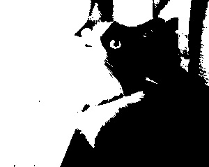
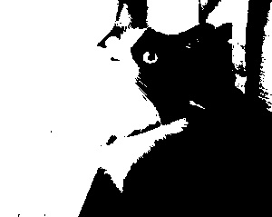
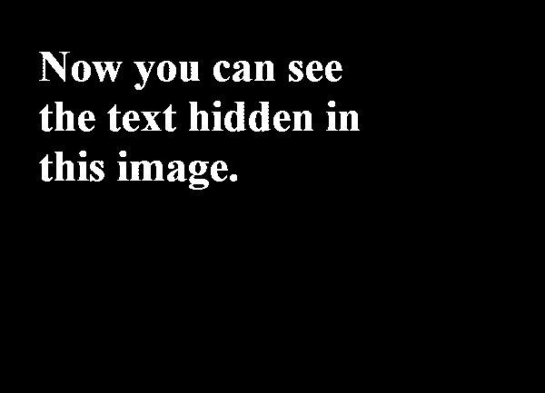
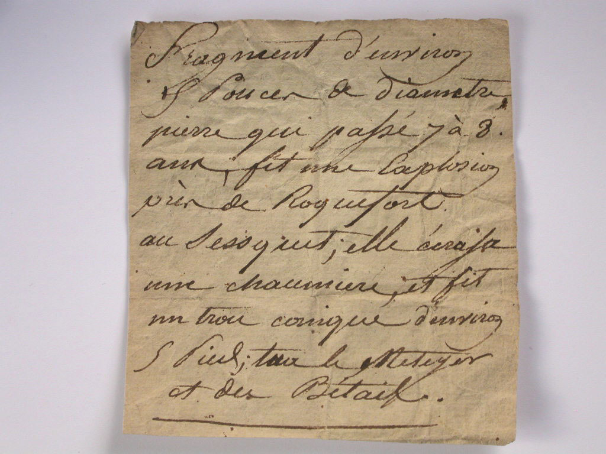
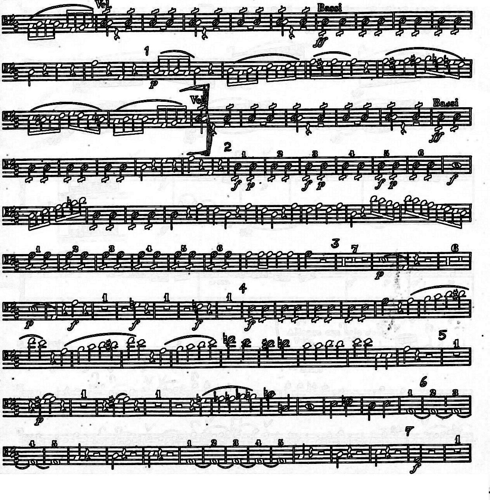
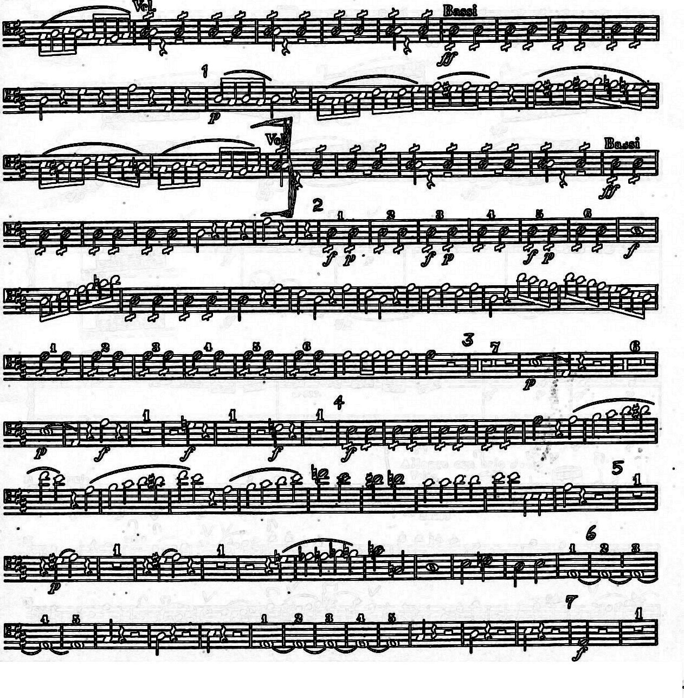

 Threshold Value: 91

Threshold Value: 1
2. Threshold this image so that the text is black and the background is white. Do your best. What's the threshold value? Is there one single 'best'?


Threshold Value: 132
There is no single 'best' because it depends on what each person finds as aesthetically pleasing (such as thicker or thinner writing). If you want the edges of the paper to disappear, then you would decrease the threshold value however the writing will become thinner. If you think that the edges are best, then you would increase the threshold value. The background will always be white, it is just a matter of how much detail you want to keep or how much you want to turn white.
3. Create a set of circles within squares so that so that the colored circles have the same intensity as the background color of the square. Find three examples. Convert to grey and show that the colored areas have vanished.
#D1BEFC, #FFB7C3, #C7C7C7
#E38D1E, #07B9EA, #979797
#E7C920, #53EA84, #C3C3C3
3. Enhance the edges in this image. Describe any flaws that you can identify in the enhanced image.
 
 The flaw that appears when you enhance the edges of an image is mostly the fact that the edges become so thick and prominent that things become more difficult to see and details become overshadowed by the edges. With the thicker lines, features become more blended things are also harder to distinguish if edges are close together. It's also harder to tell the difference between which notes are filled in and which aren't because edge detection only emphasizes the edges.